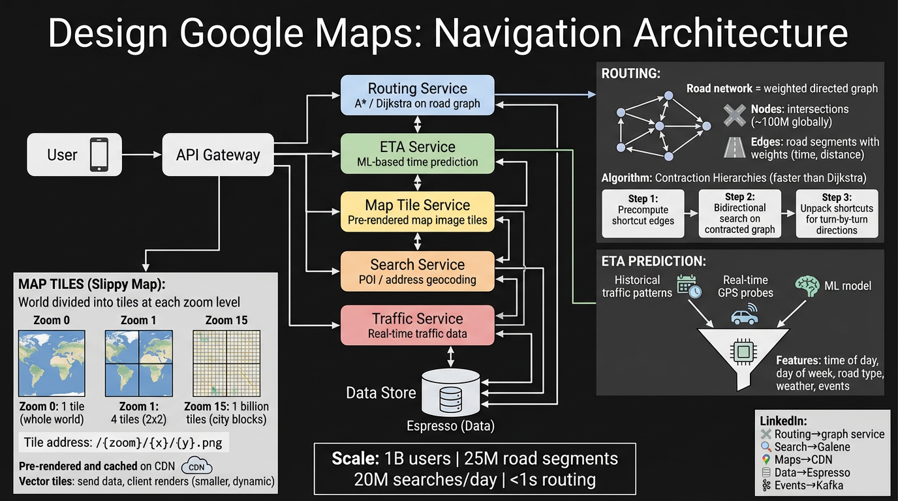

Section 1
Overview & Scale
Google Maps is a navigation and geospatial platform that provides map rendering, point-to-point routing, real-time traffic overlays, place search, and turn-by-turn directions to over a billion monthly active users. The system must return optimal driving, walking, cycling, and transit routes in under one second while continuously ingesting live traffic data from billions of GPS probes.
Functional Requirements
- Map Rendering — Display interactive, zoomable map tiles for the entire planet.
- Route Planning — Compute shortest/fastest path between two or more waypoints.
- Turn-by-Turn Navigation — Issue step-by-step driving instructions with real-time recalculation.
- Place Search — Autocomplete and full-text search over points of interest (POIs).
- Live Traffic — Overlay real-time congestion data and suggest faster alternate routes.
- ETA Estimation — Predict arrival time using current + historical traffic conditions.
Scale Numbers
25M
Road Segments in Graph
Non-Functional Requirements
- Latency — Tile fetch <200ms, route computation <1s even cross-continent.
- Availability — 99.99% uptime — navigation is safety-critical.
- Consistency — Eventual consistency acceptable for traffic overlays; strong consistency for map edits.
- Scalability — Handle peak load during holidays and commute hours (5× average QPS).
- Offline Support — Downloaded map regions usable without connectivity.
Section 2
High-Level Architecture
The system is composed of five core services that handle distinct responsibilities, fronted by an API Gateway and backed by a CDN for tile delivery.
| Service | Responsibility | Key Data |
|---|
| Routing Service |
Computes optimal path across the road graph using Contraction Hierarchies |
Preprocessed road graph, edge weights |
| ETA Service |
Predicts arrival time using live + historical traffic |
GPS probe stream, ML model weights |
| Map Tile Service |
Serves pre-rendered/vector map tiles at all zoom levels |
Tile cache, raw geospatial data (OSM, satellite) |
| Search Service |
Autocomplete and full-text place/POI search |
Inverted index of places, coordinates, categories |
| Traffic Service |
Aggregates real-time GPS probes into road-segment speed estimates |
Streaming GPS data, segment speed cache |

Figure 1 — High-level architecture: client, API Gateway, five core services, CDN, and data stores.
Architecture Walkthrough
- User opens the app — The client requests map tiles for the viewport. The API Gateway routes the request to the Map Tile Service, which checks the CDN edge cache first. On a cache miss, the tile is fetched from blob storage, served, and cached.
- User types a destination — Keystrokes hit the Search Service for prefix-based autocomplete against a geospatially partitioned inverted index. Results are ranked by proximity, popularity, and personal history.
- User requests directions — The Routing Service receives origin + destination coordinates. It queries the precomputed Contraction Hierarchies graph, retrieves current edge weights from the Traffic Service, and returns the optimal path with alternatives.
- ETA is computed — The ETA Service takes the selected route's road segments, pulls live speeds from the Traffic Service and historical speed profiles, feeds them into an ML model, and returns predicted arrival time.
- Navigation begins — The client streams GPS location to the Traffic Service (contributing to the probe pool). The client-side engine issues turn-by-turn instructions. If the user deviates, the client requests a reroute from the Routing Service with <500ms latency.
- Traffic overlay updates — Every 30 seconds the Traffic Service publishes updated segment speeds. The client fetches traffic tiles showing green/yellow/red congestion overlays via the CDN.
Section 3
Map Tiles
Rendering the entire planet at interactive speed requires a tiled approach — the map is divided into a grid of small, pre-rendered images (or vector tile bundles) that the client fetches on demand as the user pans and zooms.
Slippy Map Tile System
The industry-standard Slippy Map convention divides the world into a square Mercator projection. At each zoom level z, the world is split into 2z × 2z tiles. Each tile is addressed by three coordinates:
/{zoom}/{x}/{y}.png
Zoom 0 → 1 tile (entire world)
Zoom 1 → 4 tiles (2×2)
Zoom 10 → ~1M tiles
Zoom 15 → ~1B tiles (street level)
Zoom 20 → ~1T tiles (building level)
| Zoom Level | Tiles | Detail | Typical Use |
|---|
| 0 | 1 | Whole world | Globe overview |
| 5 | 1,024 | Country level | Continent browsing |
| 10 | ~1M | City level | Metro overview |
| 15 | ~1B | Street level | Street navigation |
| 18 | ~69B | Building footprints | Last-mile detail |
| 20 | ~1.1T | Sub-building | Indoor maps |
Raster vs Vector Tiles
Raster Tiles (PNG/JPEG)
- Pre-rendered server-side — cheap client rendering
- Fixed style baked in at render time
- Larger payload (~20-40 KB per tile)
- No rotation/tilt without distortion
- Good for satellite/terrain imagery
Vector Tiles (PBF/MVT)
- Send geometry + metadata; client renders with GPU
- Dynamic styling (dark mode, custom themes)
- Smaller payload (~5-15 KB per tile, gzipped)
- Smooth rotation, tilt, and continuous zoom
- Higher client CPU/GPU cost
Google's approach: Google Maps uses vector tiles on mobile (since 2010) and WebGL-rendered vector tiles on web (since 2018). Satellite view remains raster. The vector tile format encodes roads, labels, buildings, and POIs as protobuf geometries, allowing the client to render 60fps smooth zoom and 3D buildings.
CDN & Caching Strategy
Three-Layer Tile Cache
- Client Cache — SQLite database on device stores recently viewed tiles. Offline maps pre-download all tiles for a region at zoom levels 0–17.
- CDN Edge Cache — 200+ edge PoPs worldwide. Cache key =
/{z}/{x}/{y}?style=v3&lang=en. TTL ranges from 1 hour (high-zoom urban) to 7 days (low-zoom ocean). Hit rate: ~95%.
- Origin Tile Servers — On cache miss, origin renders the tile from raw geospatial data (road geometry, building polygons, elevation models) stored in a columnar geo-database.
| Layer | Latency | Hit Rate | Storage |
|---|
| Client Cache | <10ms | ~70% | 100 MB–2 GB per device |
| CDN Edge | 20–80ms | ~95% | Petabytes across all PoPs |
| Origin | 100–500ms | N/A | Hundreds of TB raw geo data |
Section 4
Routing Engine
The routing engine models the global road network as a weighted directed graph and finds optimal paths across it. The sheer scale of 25 million road segments demands algorithms far more sophisticated than textbook Dijkstra.
Graph Model
Road Network as a Graph
- Nodes — Intersections, road endpoints, and points where road attributes change (speed limit, number of lanes). ~60M nodes globally.
- Edges — Road segments connecting two nodes. Each edge stores: length, speed limit, road class (highway/local/residential), one-way flag, turn restrictions, toll flag. ~25M segments.
- Weights — Travel time =
segment_length / current_speed. Updated dynamically from the Traffic Service. Penalties added for U-turns, left turns across traffic, and toll avoidance preferences.
Node: { id, lat, lng }
Edge: { from, to, distance_m, speed_limit_kmh, road_class,
is_oneway, turn_restriction, toll, live_speed_kmh }
Weight = distance_m / live_speed_kmh (+penalties)
Algorithm Comparison
| Algorithm | Preprocessing | Query Time | Space | Notes |
|---|
| Dijkstra |
None |
O(V log V) |
O(V) |
Explores all directions equally; too slow for continental graphs |
| A* |
None |
O(V log V) better in practice |
O(V) |
Heuristic (great-circle distance) focuses search toward goal; 2–10× faster than Dijkstra |
| Contraction Hierarchies |
O(hours), one-time |
O(ms), ~0.5ms avg |
2–3× graph |
Precomputes "shortcut" edges; bidirectional search meets in the middle. Production choice |
| A* + Landmarks (ALT) |
O(minutes) |
O(ms) |
O(V × L) |
Uses landmark distances as tighter heuristic; good balance of preprocessing and query speed |
Why Contraction Hierarchies Win
CH preprocesses the graph by iteratively "contracting" (removing) less-important nodes and adding shortcut edges that preserve shortest-path distances. At query time, a bidirectional Dijkstra on the hierarchical graph explores only ~500–1000 nodes (vs millions for plain Dijkstra), yielding sub-millisecond query times.
The tradeoff: preprocessing takes hours and the shortcut edges use static weights. To incorporate live traffic, Google uses a Customizable Contraction Hierarchies (CCH) variant that separates the hierarchy structure (topology) from edge weights, allowing weight updates in seconds without full reprocessing.
Routing Request Flow
- Snap to graph — Map origin/destination GPS coordinates to the nearest road segment edges using a spatial index (R-tree).
- Fetch live weights — Query the Traffic Service for current speeds on edges in the relevant geographic region.
- CH bidirectional search — Run forward search from origin and backward search from destination, meeting at the highest-level node in the hierarchy.
- Unpack shortcuts — Expand the shortcut edges back into the original road segments to produce the full path.
- Generate alternatives — Run penalized re-searches (increase weight on edges in the best path) to find 2–3 meaningfully different routes.
- Attach directions — Convert the path into human-readable turn-by-turn instructions with street names, distances, and maneuver types.
Turn-by-Turn Directions
Once a route is selected, the client-side navigation engine handles real-time guidance:
- GPS Matching — Snap the user's live GPS to the route polyline using Hidden Markov Model (HMM) map matching.
- Instruction Triggering — Fire voice/visual instructions based on distance-to-maneuver thresholds (e.g., "In 300m, turn right").
- Rerouting — If the user deviates >50m from the route or a faster path appears due to traffic changes, request a new route from the Routing Service. Target: <500ms reroute latency.
- Lane Guidance — Overlay recommended lane based on upcoming maneuver and intersection geometry data.
Section 5
ETA & Live Traffic
Accurate ETA prediction is the single most important quality signal for a navigation app. Google Maps combines real-time GPS probe data, historical traffic patterns, and machine learning to produce ETAs that are accurate within 2–5% on average.
GPS Probe Data Pipeline
Data Collection & Aggregation
- Collection — Billions of anonymized GPS pings per day from Android phones, Google Maps users, and Waze. Each ping:
{lat, lng, speed, heading, timestamp}.
- Map Matching — Raw GPS points are matched to road segments using HMM-based algorithms (handling GPS noise of ±10m).
- Segment Speed Estimation — For each road segment, compute median speed from matched probes in the last 2–5 minutes. Minimum probe threshold: 3 probes per segment to avoid noisy estimates.
- Traffic State Classification — Segment speed compared to free-flow speed: green (>75%), yellow (40–75%), red (<40%), dark red (<20%).
- Publication — Updated segment speeds published to the Traffic Service cache and traffic tile layer every 30–60 seconds.
Traffic Data Pipeline
- Ingest — GPS pings land in a streaming queue (Kafka-equivalent) partitioned by geographic region.
- Map Match — Stream processor matches pings to road segments in real-time using Viterbi algorithm on the road graph HMM.
- Aggregate — Windowed aggregation (2-minute tumbling windows) computes per-segment speed statistics: median, p25, p75, probe count.
- Merge — Where probe coverage is sparse, fall back to historical speed for that segment/time-of-week.
- Serve — Merged speeds written to a low-latency key-value store (segment_id → speed) and published as traffic tile overlays.
ML-Based ETA Model
Feature Engineering
| Feature | Source | Why It Matters |
|---|
| Time of day |
Request timestamp |
Rush hour vs off-peak dramatically changes speeds |
| Day of week |
Request timestamp |
Weekday vs weekend traffic patterns differ |
| Road type |
Graph edge attributes |
Highways flow differently than residential streets |
| Current segment speed |
Traffic Service (live) |
Real-time conditions on the route |
| Historical speed profile |
Historical DB |
Baseline expectation for this segment/time |
| Weather conditions |
Weather API |
Rain/snow can reduce speeds 10–30% |
| Segment sequence |
Route path |
Captures correlations — congestion propagates along corridors |
| Number of traffic signals |
Graph metadata |
Signals add variable wait time |
Model Architecture
Google's published approach (DeepETA, 2021) uses a Graph Neural Network (GNN) that treats the route as a subgraph of the road network:
- Input: Sequence of road segments with per-segment features (live speed, historical speed, road class, length).
- Spatial encoding: GNN message passing captures how congestion on one segment affects neighbors.
- Temporal encoding: Time-of-day and day-of-week embeddings capture periodic patterns.
- Output: Predicted travel time for the entire route (not per-segment summation, which ignores correlations).
- Training: Supervised on billions of completed trips. Loss = MAE between predicted and actual travel time.
This end-to-end approach reduced ETA error by ~50% compared to summing per-segment estimates.
Naive ETA (Sum of Segments)
- ETA = Σ (segment_length / segment_speed)
- Ignores signal wait times
- Ignores congestion propagation
- ~15% average error
DeepETA (ML Model)
- End-to-end prediction from segment features
- Learns signal delays implicitly
- GNN captures spatial correlations
- ~2–5% average error
Section 6
LinkedIn Tech Mapping & Interview Questions
Mapping Google Maps concepts to LinkedIn's infrastructure shows how general-purpose platform primitives solve domain-specific problems at scale.
LinkedIn Tech Mapping
| Google Maps Component | LinkedIn Equivalent | Mapping |
|---|
| Search Service (place autocomplete) |
Galene |
LinkedIn's search engine handles typeahead over members, jobs, and companies — same inverted-index + prefix-trie pattern as place autocomplete. |
| Road Graph / POI Store |
Espresso |
LinkedIn's distributed document store would serve the role of persistent graph/POI storage with strong consistency and secondary indexing. |
| Map Tile CDN |
LinkedIn CDN |
Static asset delivery for profile images, video, and JS bundles — identical multi-tier caching pattern (edge → mid-tier → origin). |
| GPS Probe Ingest / Traffic Pipeline |
Kafka |
LinkedIn invented Kafka. The GPS probe pipeline is a textbook Kafka use case — high-throughput, partitioned by geo-region, consumed by stream processors. |
| DeepETA ML Model |
Pro-ML |
LinkedIn's ML platform for training and serving models (feed ranking, job recommendations). Same train-on-historical / serve-in-real-time pattern as DeepETA. |
| Traffic Stream Processing |
Samza / Flink |
LinkedIn's stream processing frameworks for real-time aggregation — windowed speed computation maps directly to Samza/Flink operators. |
Interview Questions
Routing at Scale
- Q: How would you compute a route between NYC and LA in under 1 second?
A: Use Contraction Hierarchies with precomputed shortcuts. The preprocessing (hours) amortizes over millions of queries. Bidirectional search on the hierarchy explores ~1000 nodes instead of millions, yielding sub-millisecond query time. For live traffic, use CCH which separates topology from weights.
- Q: How do you handle turn restrictions and road closures?
A: Turn restrictions are modeled as edge-to-edge constraints in the graph (not just node penalties). Road closures are handled by setting the edge weight to infinity and invalidating affected CH shortcuts. CCH supports incremental weight updates in seconds.
- Q: Why not just use A*?
A: A* is excellent for small graphs but explores too many nodes on continental-scale networks. With 60M nodes, even A*'s heuristic still visits millions of nodes. CH reduces this to hundreds by exploiting the hierarchical structure of real road networks (highways connect cities, local roads connect neighborhoods).
Live Traffic & ETA
- Q: How do you update ETAs with live traffic without recomputing the entire graph?
A: Use Customizable CH (CCH) which decouples the contraction order from edge weights. When traffic changes, only the weight array is updated (takes seconds). The query algorithm is the same as standard CH, but uses the updated weights at query time.
- Q: What do you do when you have no probe data for a road segment?
A: Fall back to historical speed profiles — median speed for that segment at the same time-of-day and day-of-week, computed from months of historical data. If no historical data exists (new road), use the speed limit with a discount factor based on road class.
- Q: How do you prevent a single slow GPS ping from corrupting traffic data?
A: Use robust aggregation: require a minimum of 3 probes per segment per window, use median instead of mean (resistant to outliers), apply speed sanity bounds (0 < speed < 200 km/h), and use map-matching confidence scores to discard low-quality matches.
Offline Maps & Tile Design
- Q: How would you implement offline maps?
A: Pre-download all vector tiles for a selected region at zoom levels 0–17 plus the road graph subgraph for that region. Store in an on-device SQLite database. The routing engine runs locally using the downloaded graph with speed-limit-based weights (no live traffic). Total size: ~100MB for a large metro area with vector tiles.
- Q: How do you decide what to show at each zoom level?
A: Feature generalization: at zoom 5 show only highways and country borders; at zoom 10 add major roads and city labels; at zoom 15 add all streets and building footprints; at zoom 18+ add house numbers and indoor maps. Each feature has a min_zoom attribute. Vector tiles include only features whose min_zoom ≤ current_zoom.
- Q: Why vector tiles over raster for mobile?
A: 3× smaller payloads (protobuf geometry vs PNG pixels), dynamic styling (dark mode, accessibility), smooth continuous zoom instead of discrete levels, 3D building rendering, and text labels that rotate/resize without pixelation. The tradeoff is higher client GPU usage, but modern phones handle it easily.